1. ls
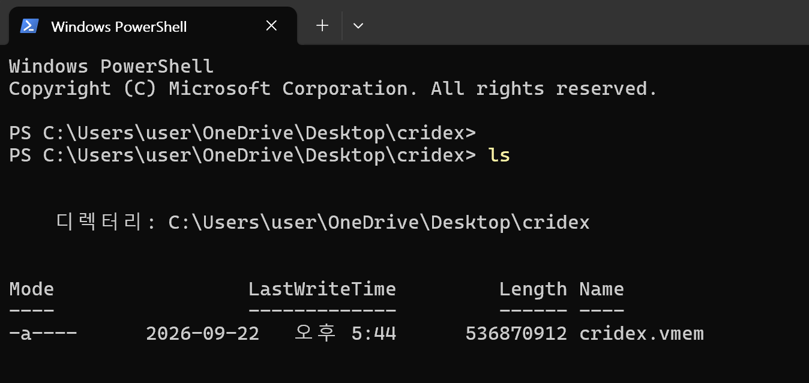
| ls | 현재 디렉터리의 파일과 폴더 목록을 보여주는 명령어 |
|---|
2. imageinfo
volatility -f <이미지> imageinfo
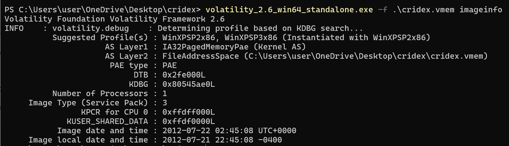
Suggested Profile(s)에 해당하는 아무 값이나 복사한다.
| imageinfo | 메모리 덤프를 보고 어떤 운영체제의 메모리 덤프인지 판단해 주는 명령어 |
|---|
3. pslist
| pslist | 프로세스 리스트를 출력하는 명령어 |
|---|
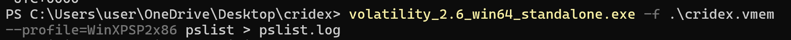
pslist를 통하여 얻은 결과를 pslist.log라는 파일에 넣어 파일을 생성한다.
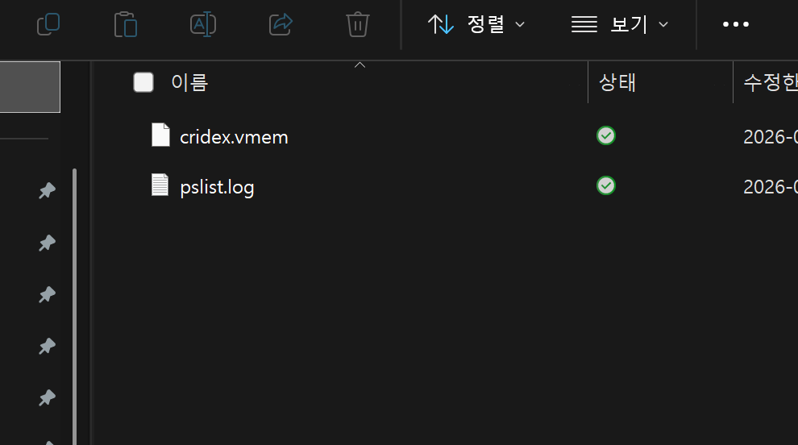
생성 완료!
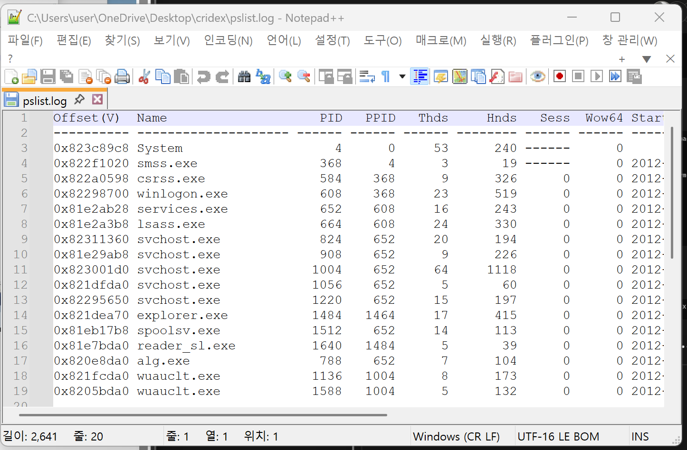
notepad++를 통해 파일 내용을 확인한다.
4. psscan 외 2개의 명령어
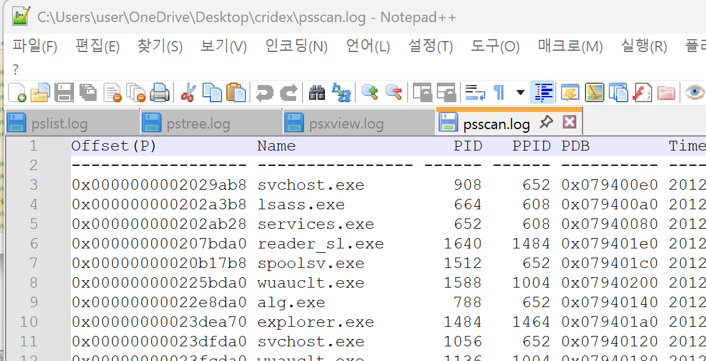
pslist.log 파일 생성 및 열람한 것과 동일한 과정을 수행한다.
모두 pslist와 같이 프로세스 리스트를 출력하는 명령어이며, 차이점은 다음과 같다.
| pslist | 시간 순서대로 출력 |
|---|---|
| psscan | 숨김 프로세스 보기 가능 |
| pstree | PID, PPID 기반으로 구조화 |
| psxview | pslist, psscan을 한눈에 볼 수 있음 |
5. 의심스러운 프로세스 목록 만들기
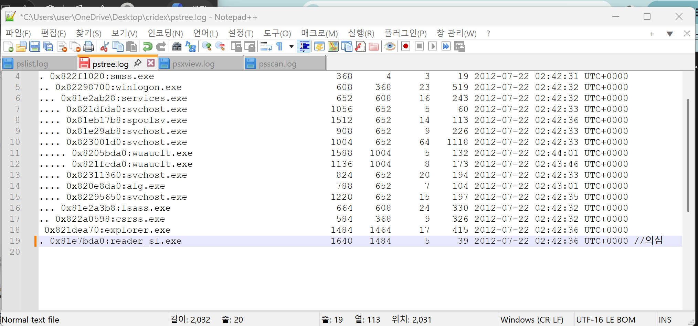
reader_sl.exe는 어도비 시스템의 Adobe Acrobat 소프트웨어의 구성 요소이다.- 어도비는 PDF를 읽는다! 보통 PDF 문서를 통한 악성코드가 많다.
reader_sl.exe
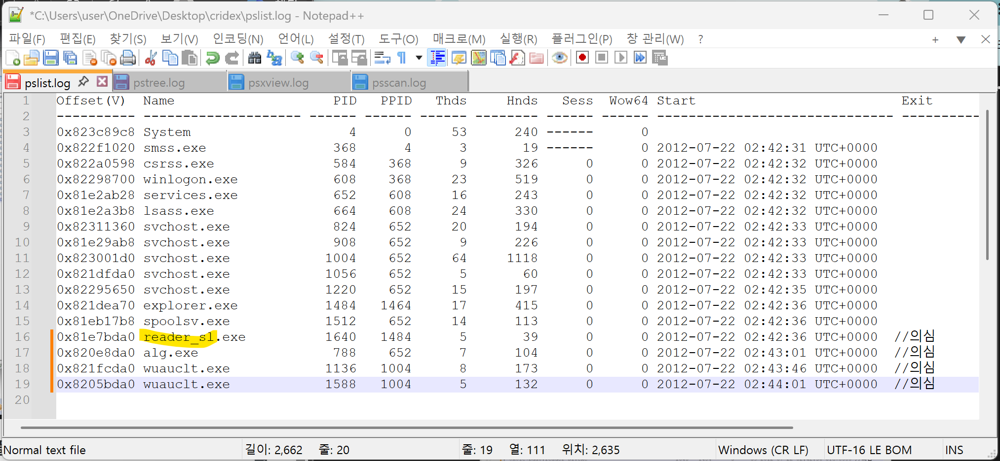
의심스러운 프로세스 실행 이후에 실행된 프로세스도 의심 목록에 포함한다.
6. cmdline 외 2개의 명령어
| cmdline | 프로세스가 어떤 명령줄 인자로 실행됐는지 확인하는 명령어 |
|---|---|
| cmdscan | CMD에서 입력된 명령어 흔적을 확인하는 명령어 |
| consoles | CMD/콘솔의 명령어 + 콘솔 활동 정보를 확인하는 명령어 |
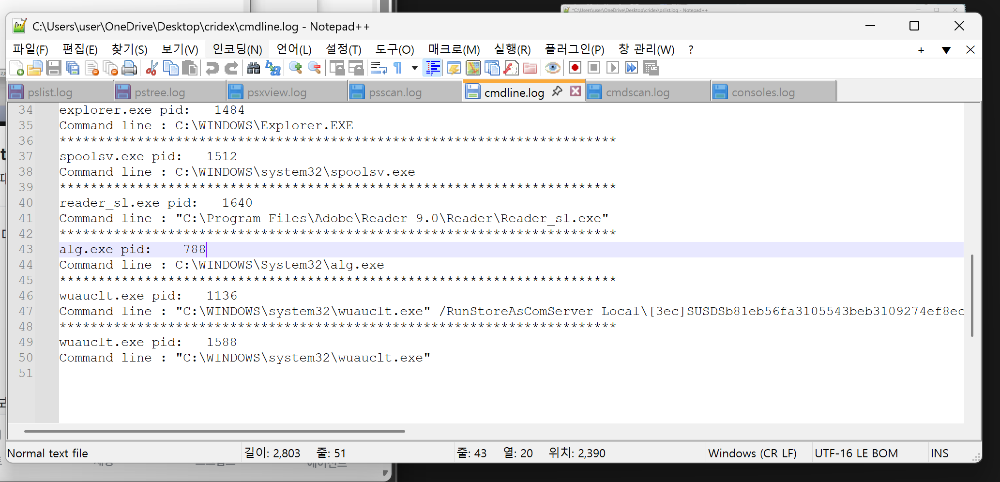
pslist.log 파일 생성 및 열람한 것과 동일한 과정을 수행한다. → 별다른 의미 있는 정보 없음
7. filescan
| filescan | 메모리 내에 존재하는 모든 파일에 대한 정보 |
|---|
7-1. 의심 파일 오프셋 찾기
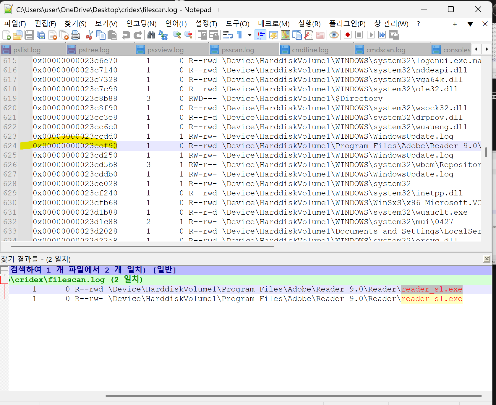
filescan.log에서 의심 파일명을 검색하고 오프셋 값을 복사한다.
7-2. 파일 추출
| mkdir | 새로운 디렉터리(폴더)를 만드는 명령어 |
|---|---|
| dumpfiles | 특정 파일을 찾아서 실제 파일 형태로 추출(dump)하는 명령어 |
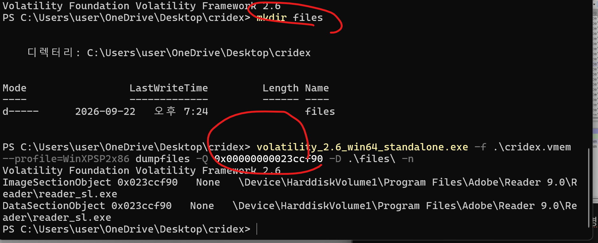
mkdir로 files라는 이름의 폴더를 만들고, dumpfiles를 이용해 파일 내용을 추출한다.
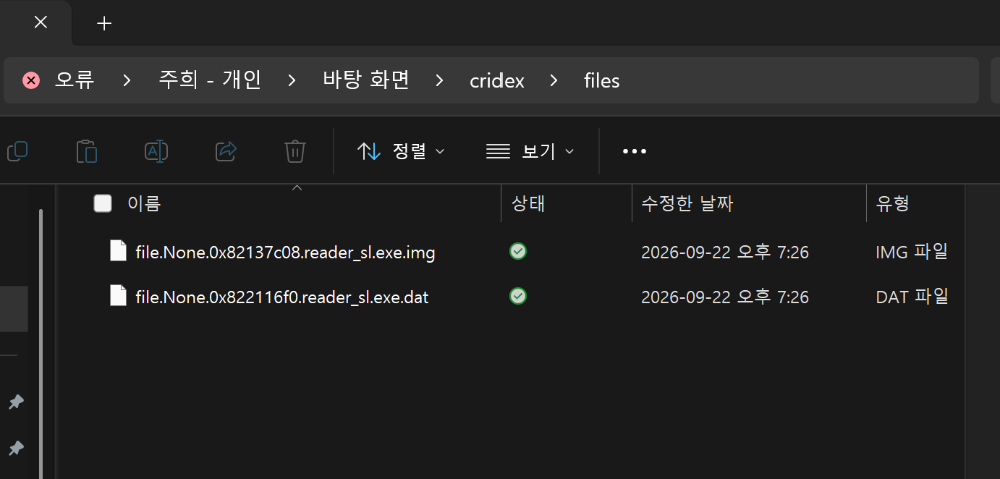
메모리 내에 있는 reader_sl.exe 파일을 추출한 결과이다.
8. VirusTotal
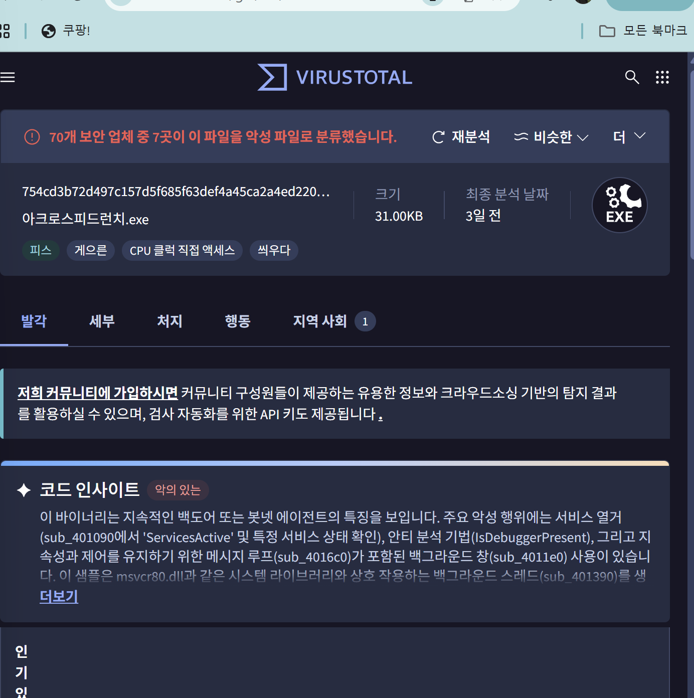
file.None.0x82137c08.reader_sl.exe.img 파일을 VirusTotal에 넣은 결과이다.
9. connections
| connections | 연결된 TCP 통신 출력 |
|---|
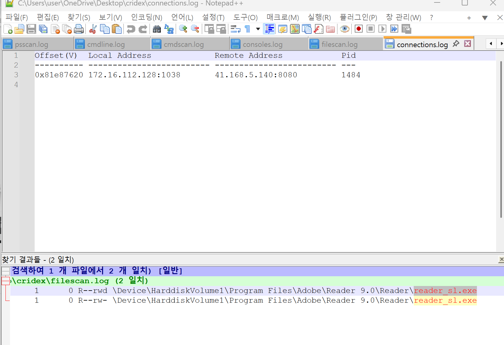
pslist.log 파일 생성 및 열람한 것과 동일한 과정을 수행한다.
- local과 remote가 8080 포트를 이용해 PID 1484에서 통신한다.
- PID 1484는
explorer.exe이므로 해당 프로세스를 의심한다!
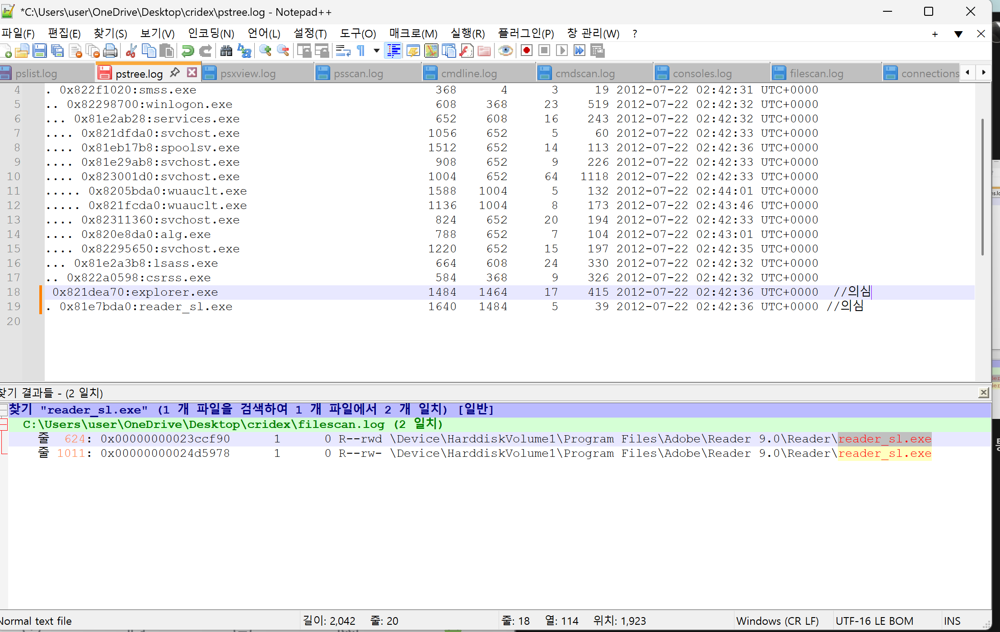
explorer.exe 아래에 reader_sl.exe가 있기에 다시 해당 파일을 의심 → memdump 실행
10. memdump
| memdump | 프로세스의 메모리 부분을 덤프해서 가져오는 명령어 |
|---|
10-1. 메모리 덤프
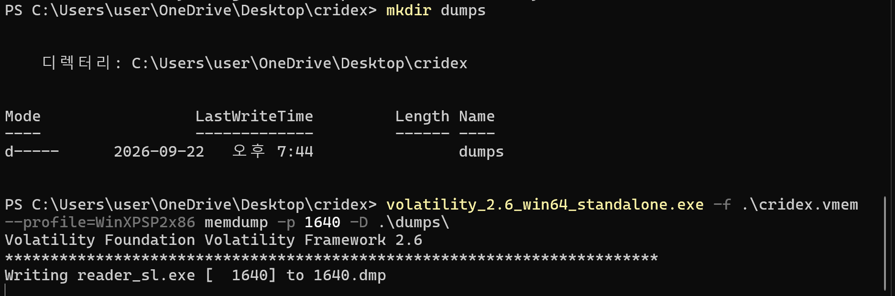
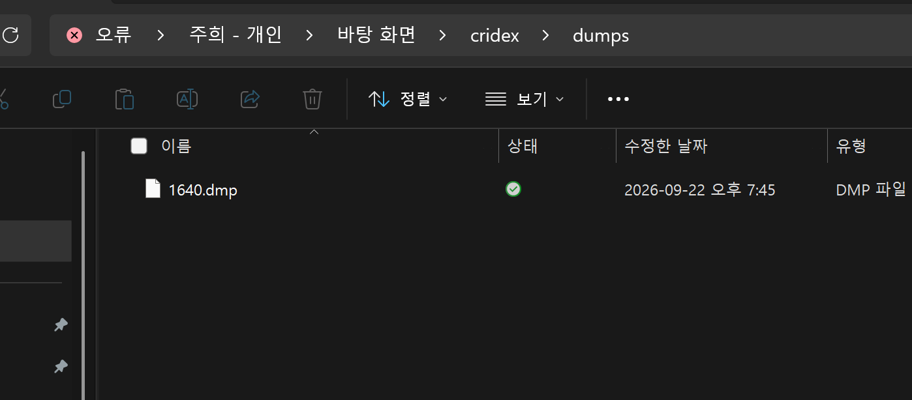
mkdir을 통해dumps폴더 생성reader_sl.exe의 메모리 영역을1640.dmp에 저장 완료
10-2. HxD
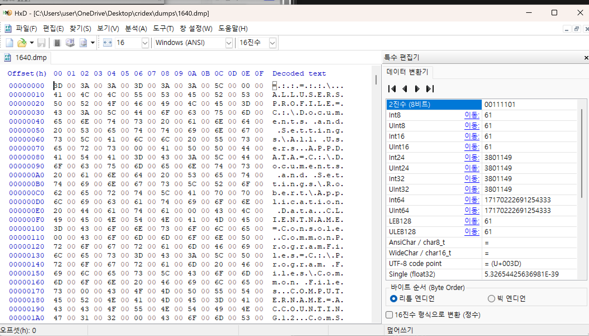
HxD를 이용해 1640.dmp 파일을 열어 보면 쓰레기 값이 많다.
10-3. strings
| strings | 파일 안에 들어 있는 사람이 읽을 수 있는 문자열(text)을 찾아서 보여주는 도구 (SysinternalsSuite 폴더 안에 있음) |
|---|
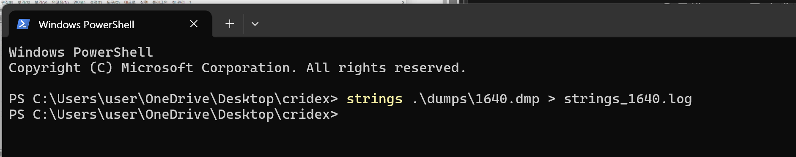
strings 도구를 이용해 파일을 생성한다.
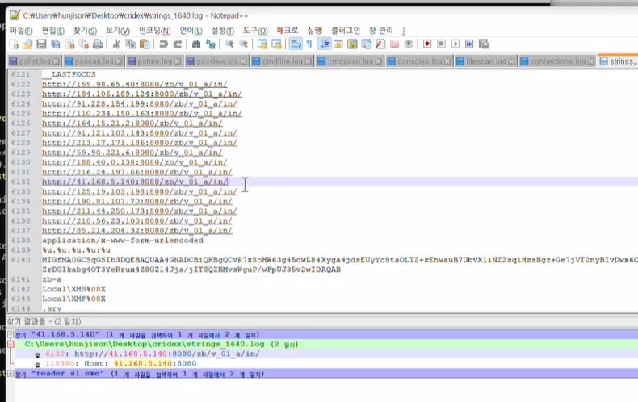
notepad++를 통해 열람 후, 41.168.5.140(IP 주소)를 검색한다. → 해커의 웹사이트 주소로 예상!
예상 시나리오
reader_sl.exe로 악성 PDF 문서 읽기- 취약점으로 인해서 악성 URL 접속
- 은행 관련 피싱으로 예상
11. procdump
| procdump | 실제로 실행됐던 프로세스를 알아내는 명령어 |
|---|
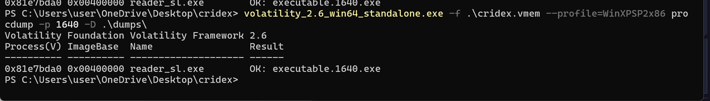
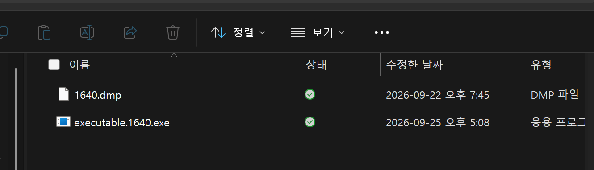
procdump 명령어를 활용해 프로세스를 추출한다.
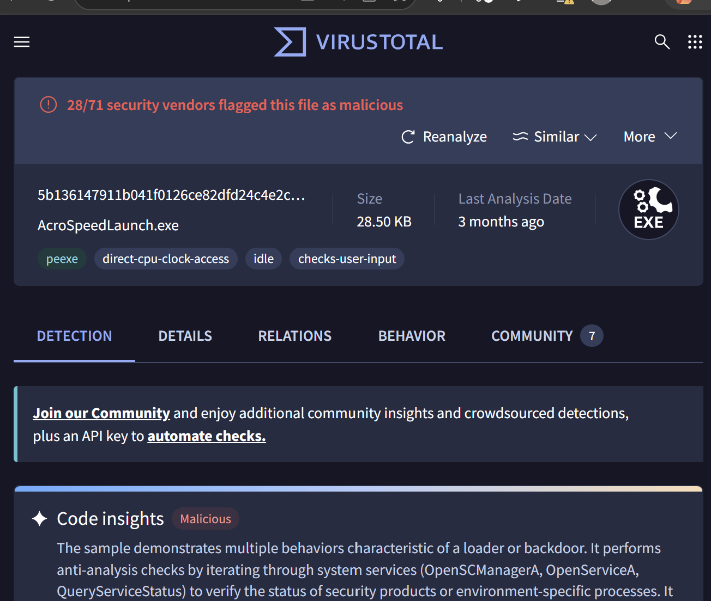